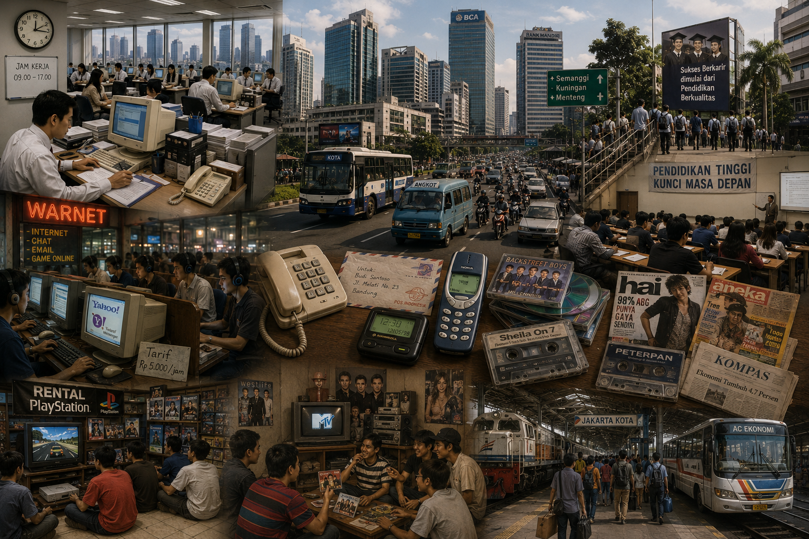

Era Milenial (kisaran akhir abad ke-20 hingga awal abad ke-21) ditandai dengan puncak kejayaan sektor manufaktur, pabrik skala besar, serta korporasi jasa modern. Pola bertahan hidup masyarakat sangat terikat pada sistem kerja formal konvensional dengan jam kerja kaku (sistem kerja 9-to-5 atau masuk jam 9 pagi pulang jam 5 sore). Terjadi gelombang urbanisasi masif di mana jutaan masyarakat desa berbondong-bondong pindah ke kota-kota besar karena seluruh pusat perputaran uang, industri ekonomi, dan perkantoran berpusat di wilayah perkotaan besar.
Komunikasi pada generasi ini mengalami fase transisi paling unik dalam sejarah, yaitu peralihan dari alat komunikasi mekanik/analog menuju digital awal. Di awal era ini, masyarakat masih mengandalkan telepon rumah (telepon kabel), surat fisik yang dikirim lewat pos, dan pager. Kemudian, teknologi berkembang dengan lahirnya telepon genggam (Handphone) seluler berukuran tebal dengan fitur andalan berupa SMS (Short Message Service). Bersamaan dengan itu, fenomena Warnet (Warung Internet) mulai menjamur di seluruh sudut kota dan desa, menjadi tempat utama bagi anak muda untuk membuat akun E-mail atau mengobrol jarak jauh lewat aplikasi chatting pertama seperti Yahoo Messenger dan mIRC.
Pada era milenial, paradigma sosial menempatkan pendidikan tinggi sebagai satu-satunya tiket emas untuk menaikkan derajat ekonomi keluarga dan mendapatkan pekerjaan layak. Terjadi ledakan jumlah universitas dan institusi pendidikan formal. Karir kesuksesan diukur secara baku melalui jalur akademis: sekolah tegak lurus, lulus kuliah, meraih gelar sarjana, kemudian melamar menjadi Pegawai Negeri Sipil (PNS) atau karyawan tetap di perusahaan swasta multi-nasional. Sertifikasi keahlian formal dan selembar ijazah fisik menjadi dokumen paling berharga dalam proses penyaringan tenaga kerja.
Interaksi sosial dan hiburan generasi milenial didominasi oleh konsumsi media massa searah yang bersifat masif, seperti Televisi (TV) swasta, radio, serta media cetak berupa koran, majalah remaja, dan tabloid. Tren gaya hidup anak muda sangat dipengaruhi oleh tayangan video musik global (seperti MTV) dan tren musik yang didistribusikan secara fisik lewat media kaset pita atau CD (Compact Disc). Kehidupan sosial remaja dihabiskan dengan berinteraksi secara nyata, seperti berkumpul bersama komunitas hobi di ruang publik, bermain game konsol di rental PlayStation, atau sekadar jalan-jalan sore di mal dan pusat perbelanjaan lokal.
Sistem transportasi pada era milenial masih sangat mengandalkan kepemilikan kendaraan pribadi (mobil dan sepeda motor bensin) serta jaringan transportasi umum konvensional, seperti bus kota, kereta api antarkota, dan angkutan kota (angkot). Mobilitas manusia menuntut kehadiran fisik secara langsung di lokasi. Perjalanan dinas luar kota, transaksi pembelian barang di pasar grosir, hingga proses pengiriman dokumen fisik harus ditempuh dengan perjalanan darat atau udara secara nyata, membuat jarak geografis antar wilayah masih dirasakan sebagai pembatas utama dalam aktivitas harian.